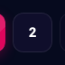
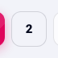
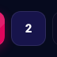
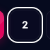
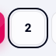
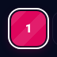
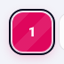

Segmented control
Exclusive options in a row, one chosen and filled: how many cases to open, a preset amount, the sort. In two sizes. Everything on this page is drawn by design/system/components/segmented-control.css through index.css, the same file a screen will load.
Anatomy
| Part | Class or element | What to change there |
|---|---|---|
| The row | .seg | the gap between options (8px); the row hugs its options and never stretches |
| An option | .seg__opt on a button, or on a link where the option goes to a section | the dark tile veil, its edge (--line-edge), the corner (the Button's), the label's weight, digits that stay one width |
| Chosen | [aria-pressed="true"] on a button, [aria-current="true"] on a link | the act's pink with its stripes and glow, the label white on it; set by the product, never by a class |
| Size | .seg--s on the row | the small button's height and label (32px, small caps), the press area kept at 44px |
Variants and sizes
One axis, size, and one content rule. Heights below are read from the rendered options, not from the stylesheet.
- Size = the weight of the choice beside it. M 44 is the choice that sits beside the act it feeds: the count of cases beside Open, the presets of an amount. S 32 is a quiet key beside a list: the sort over the items (D-243, the founder at My items called the sort buttons "such huge buttons"). Below 44px the press area stays 44px.
- Content = a number, a word or a section. A count or an amount is a digit that keeps its width. A key is a short phrase. A section is a link, so the option is an anchor and its chosen state is
aria-current: the category bar's run. - Width = the layout. An option never grows to fill; a row of six presets wraps to a second row at 360 rather than leave the page, which its container asks for (
.amount__presets).
| Size | Chosen | Not chosen | Where it stands |
|---|---|---|---|
| M 44 | 1 |
2 |
the case screen's count, the deposit's presets |
| S 32 | Newest first |
Highest value |
the sort over My items |
Content
The second row is the category bar's run, an option as a link. Its chosen look used to be a rule of the category bar (.catbar__run > .seg__opt[aria-current="true"], rename map row 12). It draws the very background and shadow of the option's own chosen rule, measured identical at rest and in focus, so it moved into the atom: the chosen look is written once and answers to aria-pressed and aria-current. The bar keeps its own scroller rules (no wrap, no underline, an inner ring), which are its layout.
When to use
Use it for a choice where exactly one of a few stands and the answer is visible at once: 1 to 5 cases, $5 to $200, newest or highest value. The chosen option shows the answer, so nothing else repeats it. Its words are short, the numbers the case's own, and the money amounts carry their sign. A choice that changes what is shown below it, such as a sort, is applied at once; a choice that feeds an act, such as the count, waits for the act (design principle 3: cost never hides inside the excitement, so the price beside the count reads the count).
Rule and anti-rule
Use it
"Cases to open" with 1 to 5 beside the open act: one chosen, the rest a tap away, the price following the choice. Or the sort over the items: Newest first, Highest value.
Take another component
Switching between sibling views of one subject, with a hairline under the row, is Tabs. Narrowing a list by many conditions at once is a Filter chip and a Checkbox. One value out of a long list is a Popover menu. A number you type is a Text field. An act is a Button.
States
Live at rest, on this page's theme: point at them, press them, reach them with Tab. Chosen is set by the product (aria-pressed, aria-current) and is not a pointer state, so it is shown at rest above and shot only where it carries the ring.
Snapshots of the same instances, dark on the left and light on the right, taken with reduced motion so each shows the face the state settles on. The base set is shot once on an option that is not chosen at size M; after it, only a named difference.


--bg-hover, --line-edge-lit
--bg-active, --line-edge-lit

--line-focus

--line-focus, --bg-act, --depth-act-glow- The same answer, said once: size S and the link form press, lift and ring as size M does; the ring is the same
--line-focustwo pixels off the edge. Only the category bar draws its ring inside the option, because its run scrolls and an outer ring is cut (the bar's own rule). - The chosen option has no hover and no press. It is already the answer; a lift on it would say it is not.
- New at this step.
kit.cssdrew no hover or press on an option; the two states here are the state tokens of D-263 applied to a key: a ground and a brighter edge, the face does not move and no border appears. - No disabled look. An option that cannot be chosen stays live and refuses with its reason beside it (D-58).
node design/kit/tools/shoot-states.js http://localhost:8765/ segmented-control # re-shoot after a change to segmented-control.css or its tokens node design/kit/tools/shoot-states.js http://localhost:8765/ segmented-control --check # step 9: fails if a snapshot drifted
In the code
| Token | Kind | Dark | Light |
|---|
Read live from tokens.css. No component token and no colour primitive: every colour is a role. The chosen label is --text-on-plate, white on the act's pink in both themes (the same white as --text-hi in dark, which is why nothing moves there). Geometry (--size-tap, --size-button-s, --radius-button, --space-*) and type come straight from the primitives.
File: design/system/components/segmented-control.css, loaded by design/system/index.css in the atoms' group.
<div class="seg" role="group" aria-label="Cases to open"> <button class="seg__opt" type="button" aria-pressed="true">1</button> <button class="seg__opt" type="button" aria-pressed="false">2</button> </div> <div class="seg seg--s" role="group" aria-labelledby="sort-l">...</div> <a class="seg__opt" href="#cat-daily" aria-current="true">Daily</a>
Stands on: the case screen, Deposit, My items, the catalogue. The catalogue wears the option as a link inside its category bar. Until step 8 those screens still read kit.css; step 6 moves them onto this file by the rename map (row 12: the category bar's chosen rule is the option's own).